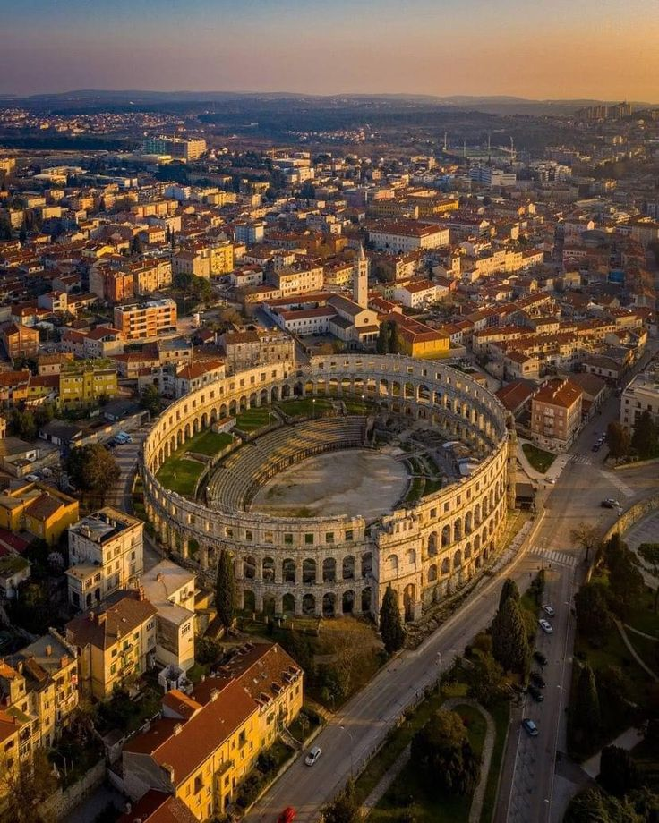

🇭🇷 Hırvatistan Seyahat Anılarım
Adriyatik Denizi'nin büyüleyici mavisi ve tarihi surlar.
📍 Nereleri Gezdim?
Dubrovnik eski şehir surlarından Adriyatik'in tadını çıkardım.
📸 Gezimden Kareler

Adriyatik denizinde yalnız bir sandal

Kuş bakışı tarihi amfitiyatro